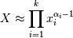
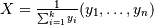

numpy.random.RandomState.dirichlet¶
- RandomState.dirichlet(alpha, size=None)¶
Draw samples from the Dirichlet distribution.
Draw size samples of dimension k from a Dirichlet distribution. A Dirichlet-distributed random variable can be seen as a multivariate generalization of a Beta distribution. Dirichlet pdf is the conjugate prior of a multinomial in Bayesian inference.
Parameters : alpha : array
Parameter of the distribution (k dimension for sample of dimension k).
size : array
Number of samples to draw.
Returns : samples : ndarray,
The drawn samples, of shape (alpha.ndim, size).
Notes

Uses the following property for computation: for each dimension, draw a random sample y_i from a standard gamma generator of shape alpha_i, then  is Dirichlet distributed.
References
[R128] David McKay, “Information Theory, Inference and Learning Algorithms,” chapter 23, http://www.inference.phy.cam.ac.uk/mackay/ [R129] Wikipedia, “Dirichlet distribution”, http://en.wikipedia.org/wiki/Dirichlet_distribution Examples
Taking an example cited in Wikipedia, this distribution can be used if one wanted to cut strings (each of initial length 1.0) into K pieces with different lengths, where each piece had, on average, a designated average length, but allowing some variation in the relative sizes of the pieces.
>>> s = np.random.dirichlet((10, 5, 3), 20).transpose()
>>> plt.barh(range(20), s[0]) >>> plt.barh(range(20), s[1], left=s[0], color='g') >>> plt.barh(range(20), s[2], left=s[0]+s[1], color='r') >>> plt.title("Lengths of Strings")